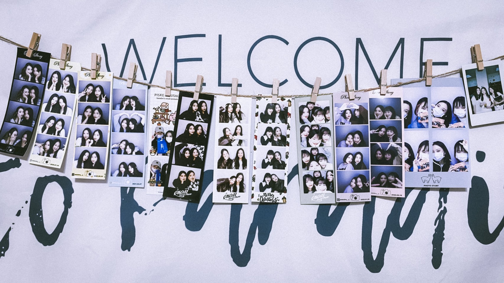

對我來說，朋友是我生活中最不可或缺的一部分。
朋友們就像我另一種層面的家人，他們是在我的成長過程中很不一樣的存在。
他們在我上學的一天之中陪伴我很長的時間，是個陪我走過各種經歷，度過各種情緒的精神支柱。
無論是喜悅還是傷痛我都會想與他們分享，因為年齡相仿的關係，我們的思考角度自然比較雷同。
如果家人的角色是盾牌，朋友們就是我對抗外界紛擾的武器，在某種程度之下，他們似乎扮演著更為知心的存在。
從前的我以為朋友應該越多越好，這樣就不容易樹敵，我總是努力給予所有人善意與關心，即使有不合適的地方也不會直說。
後來我發現這樣的交友模式距離我理想中的友誼越來越遠，因為這樣的交友思維會使我陷入許多誤會與忍耐當中，隨著一些些的裂痕出現，我意識到了我心中的朋友，也許該重新定義了。
現在的我，明白了朋友對我的意義，懂得在人際關係中取捨，每段友誼對我來說都很珍貴，無論是曾經還是現在，好的朋友使我明白自己對於他人的價值，他們幫助我更懂得肯定自己。不善的朋友使我自卑與不快樂，自我懷疑和委屈。但交友從來都不是需要勉強自己的一個活動，所以自從我的心態改變後，我也更能感受到身邊朋友們帶給我的溫暖。
在與我的朋友們相處時我總是學到很多，我學會了理解與互相，關心與支持。因此我也經常依賴朋友，希望他們給我鼓勵和回應，我想朋友不一定需要時時刻刻都與我同在，只需要當我無助時能夠知道還有他們的陪伴，我就很幸福了。